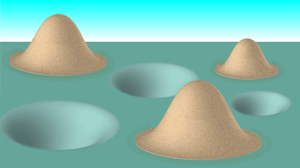

Kantorovich Problem
The Kantorovich problem (Villani 2003) is one of the two essential minimization problems in optimal transport (the other being the Monge problem). It is named after Russian mathematician and Nobel Laureate Leonid Kantorovich.

Introduction
In contrast to the Monge problem, the Kantorovich problem involves working with a non-empty minimization set, a convex constraint set, and a convex effort functional. The Kantrovich problem admits a dual because it is a linear minimization problem with convex constraints.
Shipping problem
The intuition behind the Kantorovich problem can be given by an explanation of optimizing shipments. Suppose there is a merchant who is attempting to ship items from one place to another. The merchant can hire trucks at some cost \(c(x, y)\) for each unit of merchandise which is shipped from point \(x\) to point \(y\). Now the shipper is approached by a mathematician, who claims that prices can be set such that they align with the shipper’s financial interests (Carlier 2010). This would be achieved by setting the price \(\phi(x)\) and \(\phi(y)\) such that the sum of \(\phi(x)\) and \(\phi(y)\) is always less than the cost \(c(x, y)\). This may even involve setting negative prices in certain cases. However, it can be shown that the shipper will spend almost as much as they would have if instead they opted for the original pricing method (Paris 2016).
Kantorovich Optimal Transport Problem
Transport Plans
The Monge problem was about the optimal way to rearrange mass (Craig 2020). Note that in the Monge formulation of the optimal transport problem, the mass cannot be split and thus it is mapped \(x \mapsto T(x)\). When considering discrete cases, this results in problems when trying to establish maps T such that \(T_{\#} \mu=\nu\). Kantorovich made the observation that the mass in question could be split, which makes the problem much easier to model Craig, Katy. The Kantorovich Problem. Math 260L. Univ. of Ca. at Santa Barbara. Spring 2020 . Allowing the mass to be split results in a relaxation of the problem (e.g. half of the mass from \(x_1\) can go to \(y_1\) and half can go to \(y_2\), and so on). To model this consider \(d \pi(x, y)\), which denotes the mass transported from x to y. This allows the mass to be moved to multiple places. Also consider \(\mu(A)\) and \(\nu(B)\): where the total mass taken from measurable set \(A \in X\) must be equal to \(\mu(A)\) and the total mass taken from measurable set \(B \in Y\) must equal \(\nu(B)\).
The constraints of the problem can be written in the following manner:
\[ \pi(A \times Y)=\mu(A) \]
\[ \pi(X \times B)=\nu(B) \]
for all measurable sets \(A \subseteq X, B \subseteq Y\). As such, we can interpret \(\pi( A\times B)\) as representing the amount of mass from \(\mu (A)\) that is directed to \(\nu (B)\)
If we have a measure \(\pi\) that satisfies these constraints, then the set of such \(\pi\) is referred to as \(\Pi(\mu, \nu)\) – the set of transport plans between \(\mu\) and \(\nu\). Notice again that now we are dealing with transport plans instead of the transport maps that are used in the Monge formulation of the problem Craig, Katy. The Kantorovich Problem. Math 260L. Univ. of Ca. at Santa Barbara. Spring 2020 .
Problem Statement
Given \(\mu \in \mathcal{P}(X)\) and \(\nu \in \mathcal{P}(Y)\), solve
\(\operatorname{min} \mathbb{K}(\pi):= \operatorname{min} \int_{X \times Y} c(x, y) \mathrm{d} \pi(x, y)\)
over all such \(\pi \in \Pi(\mu, \nu)\)
Assuming there is a transport map \(T^{\dagger}: X \rightarrow Y\) for the Monge problem, we define \(\mathrm{d} \pi(x, y)=\mathrm{d} \mu(x) \delta_{y=T^{\dagger}(x)}\). Using this we can see that:
\(\begin{aligned} \pi(A \times Y) &=\int_{A} \delta_{T^{\dagger}(x) \in Y} \mathrm{d} \mu(x)=\mu(A) \\ \pi(X \times B) &=\int_{X} \delta_{T^{\dagger}(x) \in B} \mathrm{d} \mu(x)=T_{\#}^{\dagger} \mu(B)=\nu(B) \end{aligned}\)
We can see that \(\int_{X \times Y} c(x, y) \mathrm{d} \pi(x, y)=\int_{X} c\left(x, T^{\dagger}(x)\right) \mathrm{d} \mu(x)\)
thus \(\inf \mathbb{K}(\pi) \leq \inf \mathbb{M}(T)\).
Kantorovich Duality
Since the Kantorovich problem is a linear minimization problem with convex constraints it admits a dual problem. The astute reader may notice that this is a linear programming problem – Kantorovich is also considered to be the founder of linear programming.
Calculus of Variations Approach
Under the right setting, one can show the Kantovorich problem indeed has a minimizer using the direct method of the calculus of variations. More specifically, if one turns to the narrow topology, then it turns out that we get compactness of the constraint set. Moreover, such a topology ensures us that our objective function is lower semi-continuous.
Knott-Smith Optimality Criterion
One useful result we have that allows us to connect both the Monge and Kantorovich problems is the so-called the Knott-Smith Optimality Criterion (see below).
Statement:
Suppose \(X\subset \mathbb{R}^d\) is compact and \(\mu, \nu \in \mathcal{P}(X)\). Let \(c(x,y) = |x-y|^2\). Then,
There exists \(f_* \in L^1(\mu)\) proper, lower semi-continuous, and convex such that
- \(\sup_{\phi, \psi \in C_{b}(\mathbb{R}^d),\ \phi \bigoplus \psi \leq c} \int \phi\ d\mu + \int \psi d\nu = -P_o = \int |x|^2 - 2f_*(x) d\mu(x) + \int |x|^2 - 2f_*^*(x) d\nu(x)\)
- For any optimal transport plan \(\pi_*\), we have that \(y\in \partial f_*(x)\) \(\pi_*\)-almost-everywhere \((x,y)\).
Conversely, if \(\pi \in \Pi(\mu, \nu)\) and \(f\in L^1(\mu)\) is proper, lower semi-continuous, and convex for which \(y\in \partial f_*(x)\) \(\pi\)-almost-everywhere \((x,y)\), then
- \(\pi\) is optimal
- \(-P_o = \int|x|^2-f_*(x)d\mu(x) + \int |x|^2-2f_*^*(x)d\nu(x).\)